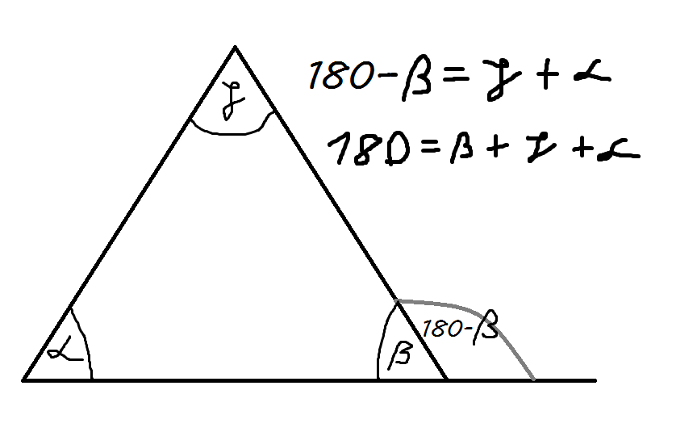
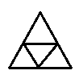
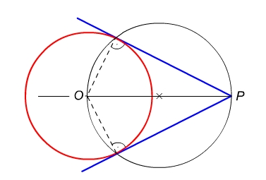
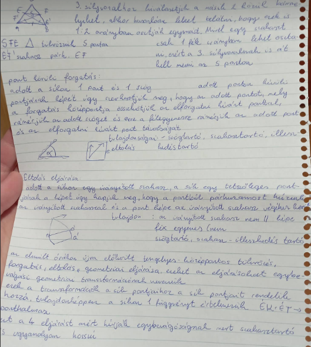

A csúcsból a szemközti oldalra bocsájtott merőleges.
A magasságpont, az a pont ahol a magasságvonalak metszik egymást.
Ha a háromszög hegyesszögű, a ma pont a háromszögön belül van.
Ha a háromszög derékszögű, a ma pont a derékszögű csúcs.
Ha a háromszög tompaszögű, a ma pont a háromszögön kívül van.
A csúcs és a szemközti oldal felezőpontját összekötő szakasz.
A súlypont, az a pont ahol a súlyvonalak metszik egymást.
1:2 arányban metszik egymást, 1 rész az oldal felöli, 2 rész a csúcs felöli.
A háromszög külső szöge egyenlő a nem mellette lévő két belső szög összegével.

A háromszög oldalfelező merőlegesei egy pontban metszik egymást, ez a pont a háromszög köré írható kör középpontja.
A háromszög belső szögfelezői egy pontban metszik egymást, ez a pont a háromszögbe írható kör középpontja.
A háromszög bármely 2 felezési pontját összekötő szakaszt a háromszög középvonalának nevezzük (3 ilyen vonal van).


